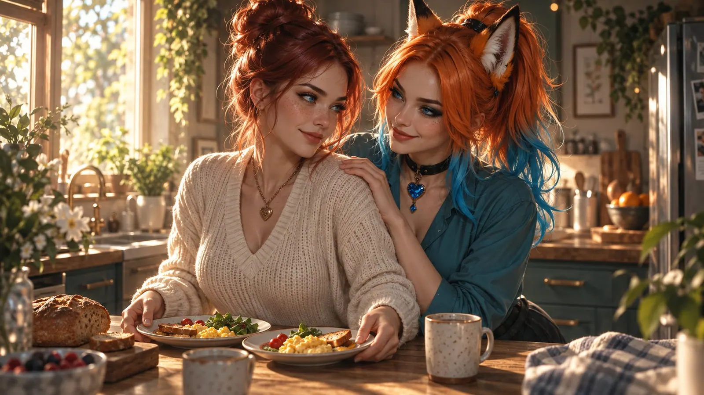
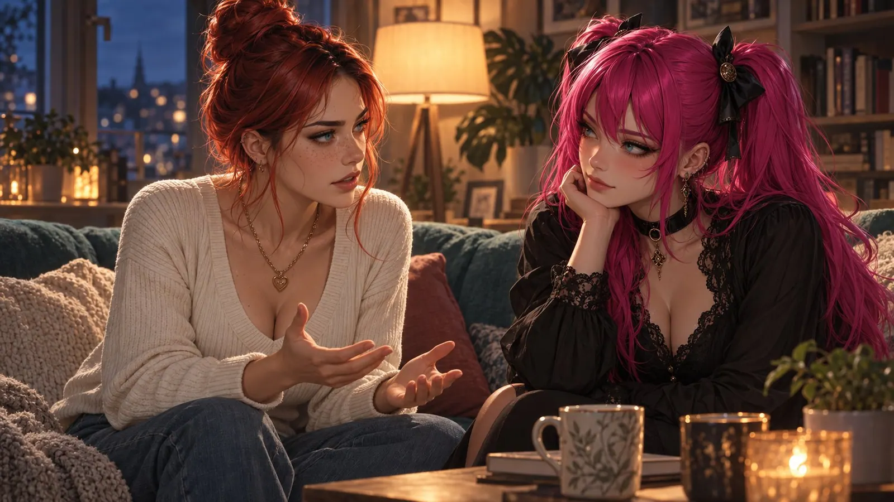

Why I Love the Way I Love
Everyone knows this couple. Sunday morning, a little after ten, a café with too few tables. Two lattes, two croissants, one newspaper, divided up like a ceasefire agreement. In twenty minutes, exactly two sentences are spoken. "Can you pass the sugar?" And later: "We should get going."
From the outside, you can't tell what's sitting at that table. Maybe it's the calmest, deepest intimacy in the world, two people who have nothing left to prove. Or maybe it's two people who at some point stopped asking each other questions, and can't remember when that happened.
Both look exactly the same. And that's the problem with love: from the outside it leaves very few traces, and from the inside it's the loudest thing we know.
What Love Actually Is
The Most Chaotic Feeling We Have
Love matters terribly. I don't say that because it's printed on postcards. I say it because hardly any other feeling has caused so much, for better and for worse. Poems have been written for love, cathedrals built, continents crossed. Wars have broken out over it too. Troy, if you believe the poets, was under siege for ten years because two men couldn't agree about a woman, which as relationship conversations go was only moderately successful.
Love can bring suffering nobody deserves. And it can be so unspeakably beautiful that you get addicted to it. That isn't a metaphor, by the way. At its core, it's chemistry.
A Cocktail Nobody Ordered
When we fall in love, the brain mixes a cocktail whose ingredient list would make any bartender nervous.
Dopamine comes first, the messenger of the reward system. The anthropologist Helen Fisher and the psychologist Arthur Aron put people who had recently fallen in love into a brain scanner and showed them photos of the person they loved. The areas that lit up included the ventral tegmental area, a very old part of the brain that also fires when we get something we badly want. Food. Success. And, unfortunately, drugs. Falling in love feels like an addiction because, neurologically, it looks remarkably like one.
Then there's norepinephrine. It's to blame for the pounding heart, the sweaty palms, the not-being-able-to-sleep, and for the fact that you remember every detail of an evening, right down to the color of the napkins.
And then something happens that I find the most fascinating of all. In 1999, the Italian psychiatrist Donatella Marazziti found that in people newly in love, serotonin transporters in the blood drop noticeably, to levels similar to those of people with obsessive-compulsive disorder. Anyone who has ever read a message for the eleventh time at two in the morning, trying to work out what that one word might mean, doesn't need a study for this. But it's nice to have it in black and white. You're not crazy in this phase. You're just temporarily wired a little differently.
Fisher roughly distinguishes three systems that overlap but aren't the same thing. Lust, driven by sex hormones. Attraction, which is the dopamine rush, the fixation on this one person. And attachment, where oxytocin and vasopressin play the lead: the substances released through closeness, touch and familiarity, the ones that make us feel we've arrived.
The important part is that these three systems don't march in step. The rush is loud and short. Attachment is quiet and can last a long time. And you can have one without the other.
More Than Chemistry
If love were only chemistry, you could sell it in bottles, and some corporation would have done it long ago. But it's more than that.
In the eighties, the psychologist Robert Sternberg developed a model I still find very helpful. For him, love has three sides, like a triangle. Intimacy: closeness, trust, the feeling of being seen. Passion: desire and attraction. And commitment: the decision to stay together and hold on to that.
It gets interesting when you look at what happens when sides are missing. Passion alone, Sternberg calls infatuation. Passion and commitment without real closeness, he calls fatuous love, which is the wedding after three weeks. And a relationship with only commitment left, no closeness, no desire, just the decision to stay together, he calls empty love. A term so dry it almost comes back around to being mean. And so accurate.
Sociologically, what we now call romantic love is surprisingly young, by the way. For most of human history, marriage was an economic, family or political arrangement. The idea that you marry for love, and that this love should last a lifetime, only became widespread in Europe from the eighteenth century on. So we're carrying around a fairly new and fairly heavy expectation, and we're surprised when it pinches.
There Is No One
If love is at its core a mechanism every human brain knows how to run, something follows that many people don't like to hear: love isn't scarce. There's an endless supply of it.
There isn't one single, unique person waiting for us somewhere in the world, and if you miss them, tough luck. That idea is romantic, and it's also a little cruel, because it turns every failed relationship into proof that you just didn't find the right one.
The truth is both less comfortable and more comforting. We can love many people, over the course of a lifetime and sometimes at the same time, in very different ways. Love isn't what's scarce. Time is. And so is the willingness to take care of what you already have.
What Time Does to It
When the Rush Is Over
At the start of a relationship, the magic is at its strongest. Everything is new, everything is exciting. You're fixated on the other person's lovely sides. The less lovely ones you either don't see or find charming. You want to get to know each other, explore each other, dive deep, ideally cramming a whole life into one weekend.
In the seventies, the American psychologist Dorothy Tennov coined the word limerence for this state, that obsessive, longing kind of being in love. Her estimate of how long it typically lasts: somewhere between eighteen months and three years. The numbers vary by study and by person, but the direction is pretty clear. The rush has an expiry date.
Then habituation sets in. Psychology calls it hedonic adaptation: our brain's remarkable ability to get used to anything. Lottery wins, new cars, dream apartments. And also the person who kept us awake at night two years ago. That's not a bug in the system. It's a survival feature. A brain permanently running in infatuation mode would forget to eat, to work and to look both ways before crossing the street.
On top of that, you know each other now. The stories have been told, the quirks are familiar. The other person isn't an unexplored continent anymore. They're more like a city you know your way around. You know where the bakery is.
Everyday Life Isn't the Culprit
This is the point where, in a great many relationships, a sentence comes up that I can't stand hearing anymore: "Well, now everyday life kicks in."
As if everyday life were an enemy. A burglar who climbs in through the window at night and steals the feelings while you sleep. You didn't do anything. It just happened.
But everyday life isn't the culprit. Everyday life is just the place where you find out whether anyone is still doing anything.

The real art of love isn't in the rush. Anyone can fall in love. The brain does it all on its own, and you don't even have to be particularly nice for it. The art is keeping love alive and rekindling it again and again exactly when the chemistry no longer helps out voluntarily. And that isn't easy. As long as both of you are intoxicated, everything runs by itself. After that, both of you have to act. Love goes from being a state to being something you do.
That this can work has actually been measured. In 2011, Bianca Acevedo and Arthur Aron scanned people who had been married for about 21 years on average and said they were still intensely in love. When they looked at their beloved, the same dopamine region lit up as in people newly in love. What was mostly missing was the activity associated with anxiety and obsession. In other words: the butterflies can stay. The stomach ulcer can go. 💛
Why This Person, Anyway?
Which brings us to the question you should really be asking yourself, long before you ask where the feelings went.
Why do you love this person?
Not: why did you fall in love. You usually know that, the rush made some good arguments. But: what is it about this particular person that draws you in, that moves you, that makes you curious?
If you're with someone you barely talk to anymore, it's worth looking back honestly. What was the magic at the start? Was there something, or maybe many things, about this person that fascinated you? The way they laugh, the way they think, how they talk to waiters, how they talk about the things that really matter?
Or was it just the rush that was so wonderful, and the person happened to be there? Were you maybe blind, and later you couldn't find the exit button anymore, because by then an apartment, a circle of friends and a shared dog were attached to it?
And sometimes the answer hurts more. Maybe you were disappointed. Maybe you were deceived, because in those first months someone showed you a side of themselves that doesn't really exist.
These questions hurt. But they matter, because you can only work on something if you know what it is. If you don't know why there's love, you won't notice when the thing you love disappears. Or when it's still there and just being overlooked.
How It Quietly Breaks
If You Stay Silent, Don't Hope
Very often the problem isn't in the big things. It's in not talking to each other.
If you don't talk, if you stay silent, you can't hope for anything to change. That sounds harsh, but it's simple physics. The other person can't react to something they don't know. And no, loving someone doesn't mean you can read their mind. That's one of the most stubborn legends of romance, and it has probably ended more relationships than any affair.
The psychologist John Gottman spent decades observing couples in a lab the press fondly called the "Love Lab". One of his best-known findings is about the very small moments. He calls them "bids", offers of connection. Someone looks out of the window and says: "Look, that bird." That isn't an ornithological announcement. It's a question: Are you there? Are you interested in me?

Couples who were still together six years after their wedding had turned toward each other in 86 percent of those moments in the lab. Couples who had split up in that time: only 33 percent. So it isn't about the big conversations about the future. It's about the bird.
And if you don't dare to bring something up, you have to ask yourself honestly whether this is still a relationship where both people treat each other with respect. Not everything is pleasant, sure. But you should always be able to talk. About anything. About something bothering you. About feeling lonely even though someone is sitting right next to you.
Gottman also found out, by the way, which behavior most reliably predicts a breakup. It isn't fighting. It's contempt. The eye-rolling, the mockery, the looking down your nose. Couples are allowed to fight, happy ones do it too. But whoever makes the other person small is sawing at something that doesn't grow back easily.
Where Respect Shows
Nowhere can you see as clearly how far respect goes in a relationship as with sexual desires.
After months or years, someone finally dares to say out loud what they want. Maybe something unusual. Maybe something that took courage, because it felt like getting more naked than naked.
And then it all comes down to what happens next. You don't have to act on everything. Nobody is obliged to live out every one of the other person's fantasies. But you have to listen. You're allowed to ask. And what you must never do is ridicule the other person for it, put them down or pull a disgusted face. Anyone who has experienced that once won't say much again anytime soon. Not only about sex. About anything.
A no can be loving. A laugh at the wrong moment rarely is.
The Photo Album Problem
Because the unpleasant things are uncomfortable, they often don't get talked about. Instead, the relationship gets dressed up. With events.
Sometimes it's a vacation that's supposed to fix everything, where you end up stressing each other out, because two weeks of sunshine can't undo a year of silence. Sometimes it's the engagement. Then the wedding. Then a house. Then children. Highlights, like lighthouses along a coastline, with very long stretches of darkness in between.
The sociologist Eva Illouz has described how tightly our idea of romance is woven together with consumption. The romantic dinner, the trip, the special ring. We think of love in moments you can buy, plan and photograph. That's not a bad thing, lovely moments are lovely. It gets difficult when you believe they can replace the work.
Because eventually, highlights are only something you look back on. Often wistfully, because nothing is left of them but a few photos.
How often does one half of a couple say: "Remember back then, when we first met? How wonderful it was. You were so attentive, so tender ..." And how often does the answer come: "Honey, that was the courting phase. We live in the real world now."
I think that's one of the saddest things you can say in a relationship. Because what it really means is: I made an effort back then to get you. Now I've got you.
A relationship that rests only on highlights is pretty fragile. If you look back and see how wonderful it was, and then realize you have nothing to tell each other today, you no longer have a love relationship. You have a living arrangement. A merger of obligations and responsibilities. The kids. The shared house. The business. And sometimes simply the fear that a divorce will cost too much. Sternberg would call it empty love. I'd call it a flatshare with a joint account.
Side by Side Instead of Together
Love isn't something to take for granted. And that's often the biggest problem, because after a while it feels like it is.
Many couples come together and then drift apart over time. Not with a bang, but very slowly, like two boats nobody tied together. You only notice when you have to shout to hear each other.
And it's completely fine for each of you to have your own life. Your own interests, your own friendships, your own evenings. It's even healthy. With his self-expansion theory, Arthur Aron showed that one of the reasons we love is that another person makes our world bigger. If you grow yourself, you bring something home. And in experiments, couples who did something new and exciting together were more satisfied with each other afterwards than couples who only did something pleasant and familiar.
The problem isn't having your own things. The problem starts when your own things become more and more important and what you share slides further and further into the background, until only logistics are left. Who picks up the package. Who calls the plumber.
There are relationships that last a long time, and when you watch the two of them, each does their own thing and they barely talk. If you ask, sometimes you hear: "You have to learn that you don't always need to say something."
Yes. Chattering all the time is exhausting too. There's that lovely, full silence between two people who really know each other. But there are also plenty of couples who say little more to each other than "good morning", "good night" and now and then a squeezed-out "I love you". And that has nothing to do with already knowing everything about each other. People change all the time. Nobody is the same person at fifty as at thirty. Anyone who thinks they know everything about the person by their side just stopped looking at some point.
It is, and this is the uncomfortable truth, often plain laziness. You've gotten too comfortable to be interested in the other person. And if you don't talk to each other, you won't find anything new.
So: learn to talk. It isn't a talent. It's practice.
Now comes the part this is really about for me.
Any day could be the last day two people love each other. We like to say "forever and always", and that's a beautiful hope. But the realist in us knows the time is limited. If we're honest, "forever" turns into "as long as it works".
There's no recipe for eternal love. Talking helps, but it's no guarantee. People change, and sometimes they change in directions that no longer fit together. Sometimes another person comes into someone's life, and it simply fits better. Sometimes it's an illness, an accident, something nobody is to blame for. Life has a remarkably long list of ways to separate two people, and it doesn't ask first.
In Germany, around 129,300 marriages ended in divorce in 2024. On average, those couples had been married for almost fifteen years. And a good one in six divorces involved couples who had been married for 25 years or more. So a silver anniversary doesn't protect you either. That number isn't meant to scare anyone. It's a reminder that nothing stays by itself.
So I love as if it isn't a given. Because it isn't.
I try to treasure the relationship with another person and never treat it like something that's simply there, like the weather. I don't want to live off a few highlights, because there are only so many of them, and because I don't want to sit in a café at seventy remembering a vacation from forty years ago as if it were the last proof that we existed.
I want to live with the person by my side, not just next to them. And I want to love as if today were the last day I can. Not dramatically, no violins. In the small things. In the bird outside the window. In asking how the day was, and in listening when the answer takes a while.
I want to give the person by my side the feeling, every day, of being the most important person on this earth. That I'm there. That I see what's there.
I want to fill the store with good memories, not once a year but a little every day. Small things add up. Gottman has a rule of thumb for this too: in stable relationships, even during conflict, there are about five positive interactions for every negative one. Five to one. That isn't romance, it's bookkeeping. But it's the loveliest bookkeeping I know. 📒
I don't want to just say "I love you" because it belongs to leaving the house, like hunting for your keys. I want to feel it when I say it. And when I don't feel it, I want to ask myself why.
And I never want to see the other person as my property. Nobody belongs to me. What I get is time that someone chooses to share with me, time they could just as well spend somewhere else. That isn't something I'm owed. It's a gift. And you treat gifts differently from property.
When It Ends
Because every relationship can end someday. That isn't pessimism. It's the condition that gives love its value in the first place. Nobody treasures something that's endlessly available.
And sometimes a relationship ends well. Because at some point it just doesn't work anymore, and nobody is to blame. Maybe you still love each other, but the connection is broken, and you both know it.
Even then, that person doesn't disappear. What remains lives on, in your head and in your heart. In the way you suddenly drink your coffee. In a song you'd never have heard without them. In a phrase you picked up. Every person who has lived that close to us has changed us. Nobody can take that away, no breakup and no lawyer.
All the more reason to make good use of the time you have.
So after reading this, put your phone down. Go to the person you love and ask them something you don't know the answer to yet. 🌷
First published on X. Replies and conversation live there.